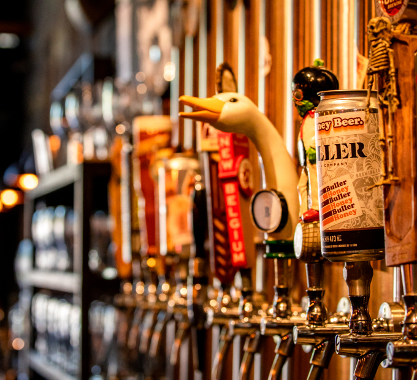
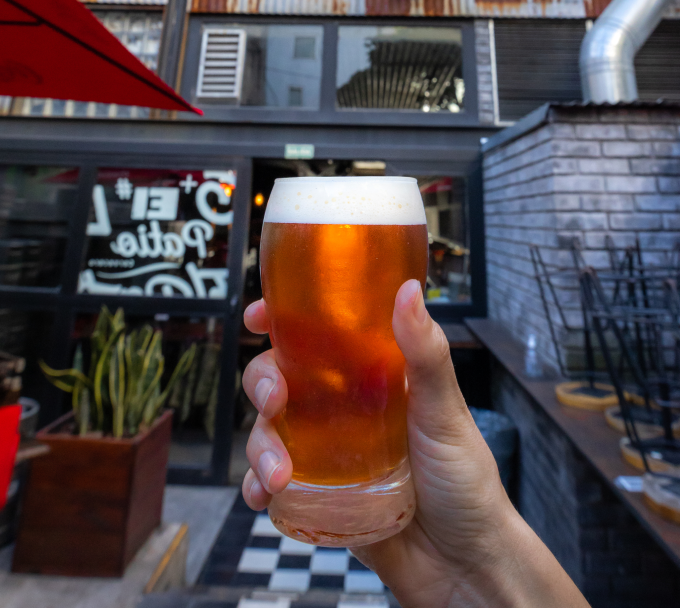

BULLER reúne el esfuerzo y conocimiento de tres generaciones dedicadas a la elaboración artesanal de cerveza.
Elaboramos cerveza bajo las más antiguas tradiciones pero con la tecnología y el gusto actual.
Desarrollamos todas nuestras variedades respetando los tiempos, procesos y temperamento propio de cada variedad para lograr el sabor único que hoy es nuestro sello diferencial.


